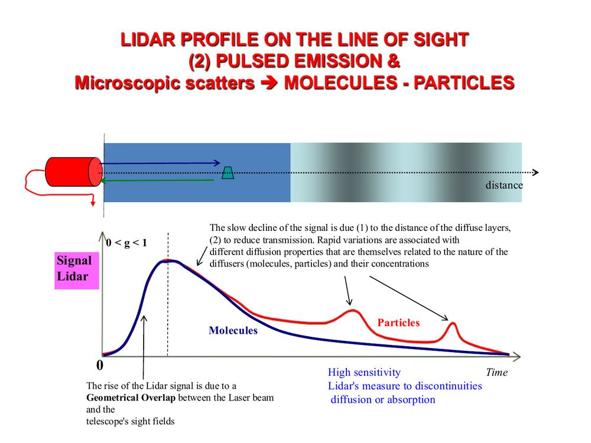
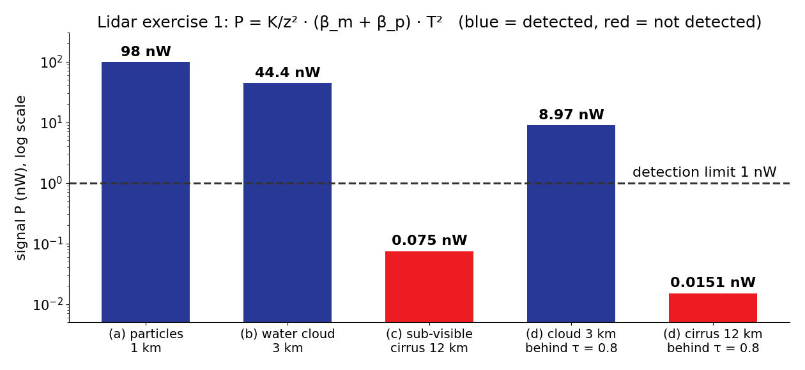

Active remote sensing: lidar
Part D · lecture master slides 59–61, 206–232
Lidar: a laser and a telescope
- Laser emits a known pulse
- Telescope collects the backscattered light
- Compare emitted and received light
- Distance, speed, polarisation, size
Advantages
Direct range; vertical profile at high resolution; size, shape, velocity of particles.
Limits
Only along the laser line (no scanning); one or few wavelengths.
Range from the time of flight
R = c · t / 2
3 km ⇒ t = 2R/c = 20 µs ; 30 ns pulse ⇒ ΔR = cτL/2 = 4.5 m
- Continuous laser: constant signal, no distance
- Pulsed laser: delay ↔ distance
- Atmosphere is semi-transparent: signal along the whole path
Hard target and semi-transparent diffusers

Lecture slide 212: each flight time t corresponds to a distance R; the pulse is attenuated, not blocked.
Shape of the lidar signal

Lecture slide 213: rise = geometrical overlap; slow decline = distance (1/z²) and transmission; peaks = layers.
The lidar equation
P(z) = K / z² · β(z) · T²(z)
β = βm + βp ; T(z) = exp(−∫0z α dz′)
- P received power (W)
- K calibration constant (W m³ sr)
- β backscatter coefficient (m⁻¹ sr⁻¹)
- T² two-way transmission
Exercise 1: can the lidar detect it?

P = K/z²·(β_m + β_p)·T². Blue = detected, red = below the 1 nW limit. (d): cloud of τ = 0.8 at 2 km.
Exercise 1: numbers
| Target | z | β_p | T | P (nW) | Detected |
|---|---|---|---|---|---|
| (a) particles | 1 km | 1×10⁻⁶ | 0.7 | 98 | yes |
| (b) water cloud | 3 km | 15×10⁻⁶ | 0.5 | 44 | yes |
| (c) sub-visible cirrus | 12 km | 0.2×10⁻⁶ | 0.3 | 0.075 | no |
| (d) 3 km behind τ = 0.8 | 3 km | — | 0.5·e−0.8 | 9.0 | yes |
| (d) 12 km behind τ = 0.8 | 12 km | — | 0.3·e−0.8 | 0.015 | no |
Lecture solutions: 98, 44, 0.08, 8.6 nW. Our 8.97 nW for (d) uses exp(−2τ); same conclusion.
DIAL: only the difference is water vapour
αH₂O = (1/2Δr)·ln[ POFF(r₁)·PON(r₂) / (PON(r₁)·POFF(r₂)) ]
- ON: on a water-vapour line; OFF: close, no absorption
- 1/z², K and β cancel in the double ratio
- Remaining: exp(−2 αH₂O Δr)
Exercise 2: water vapour at 1–1.5 km

ln(8/7) = 0.134 ⇒ α = 1.34×10⁻⁴ m⁻¹ ⇒ q = 6.68 g/kg (lecture: 6.68 g/kg).
What else is in the signal?
Wavelength
Raman and Doppler shifts: composition, wind.
Polarisation
Depolarisation flags non-spherical dust and ice.
Spectral width and coherence
Temperature, turbulence.
Applications
- Boundary-layer diurnal cycle
- Saharan dust intrusions
- CALIOP aerosol classification
- Dust deposition and fertilising of the Amazon
- Topographic and forest-canopy lidar

Lecture slide 226: dust deposition from CALIOP + a dynamical model.
Exam checklist — Part D
1
R = ct/2; pulse needed for distance; ΔR = cτ/2
2
P(z) = K/z²·β·T² with T squared (two-way)
3
Signal shape: overlap rise, 1/z² and transmission decline
4
DIAL: ON/OFF double ratio, factor 1/2Δr
5
Advantages (range, profile) and limits (one line, few λ)
Key points
- A lidar is a ranging instrument: time of flight gives distance
- T² because the pulse crosses the path twice
- Weak far targets: 1/z² and transmission
- DIAL cancels everything except the target gas